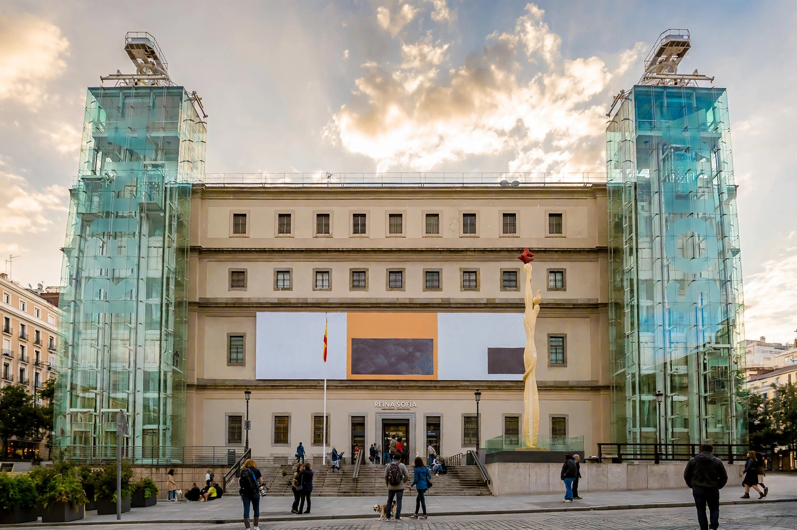

| Museo Reina Sofía | |
|---|---|
| Established | 10 September 1990 |
| Location | Calle de Santa Isabel 52, Atocha, Madrid, Spain |
| Type | National museum of modern and contemporary art |
| Key holding | Picasso's Guernica (1937) |
| Named for | Queen Sofía of Spain |
The Museo Nacional Centro de Arte Reina Sofía ("Queen Sofía National Museum Art Centre") is Spain's national museum of 20th-century and contemporary art, in Madrid. It is located near the south end of the Paseo del Prado, close to Atocha station, and forms one corner of the so-called Golden Triangle of Art, with the Museo del Prado and the Museo Thyssen-Bornemisza. It was officially inaugurated on 10 September 1990 by King Juan Carlos and Queen Sofía.

The museum's most famous work is Pablo Picasso's 1937 anti-war painting Guernica, transferred from the Prado in 1992 and displayed with its preparatory studies and Robert Capa–era photographs of the Spanish Civil War. The collection is strong in Spanish modernism: major holdings of Salvador Dalí (The Great Masturbator), Joan Miró, Juan Gris, Antoni Tàpies and Eduardo Chillida, alongside international figures such as Francis Bacon, Richard Serra, Yves Klein and Bruce Nauman. The museum also holds extensive film, photography and sound collections, and a major art library.
The main building, designed in the 18th century by José de Hermosilla and Francesco Sabatini, long served as Madrid's General Hospital. Two glass elevator towers, designed by Ian Ritchie with the architects José Luis Íñiguez de Onzoño and Antonio Vázquez de Castro, were added to the facade in the 1980s conversion. A major extension by Jean Nouvel, opened in 2005, added exhibition galleries, an auditorium and a library under a single sweeping roof. The museum also programs the Palacio de Cristal and Palacio de Velázquez in Retiro Park.
Guernica (Picasso) · Museo del Prado · Golden Triangle of Art · Madrid